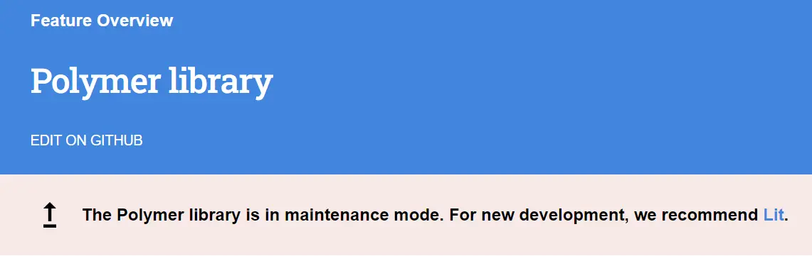

Building reusable web-components with Lit
In the current company, we have a frontend setup of HTML + CSS + JS(jQuery). Main dashboard requires very little shared state between pages. This enables very fast onboarding. When I joined, it took me two days to pick up what was going on and start contributing.
We are undergoing a large redesign, and we had a decision to make whether we want to move to React or keep the current setup. React has a learning curve, and three people will write React in three different ways.
The decision was made that the new version will still keep the same technology. The main pain point with it is not being able to reuse parts of the web. Imagine updating a menu for 60 html pages because you want to add a new link.
Web components seemed like an obvious choice. However, raw web components are not very easy to get into.
In comes Lit
Lit is a lightweight framework for web components. Currently is a go-to tool for web components. Even Google's Polymer which is supposed to do the same thing now just points to Lit. Hello world
This is an example of hello world with Lit with additional button to display reactiveness:
<script type="module">
import {LitElement, html, css} from 'https://cdn.jsdelivr.net/gh/lit/dist@2/all/lit-all.min.js';
export class SimpleGreeting extends LitElement {
static styles = css`p { color: hotpink }`;
static properties = {
name: {type: String},
};
constructor() {
super();
this.name = 'Default name';
}
render() {
return html`<p>Hello, ${this.name}!</p>`;
}
}
customElements.define('simple-greeting', SimpleGreeting);
</script>
<simple-greeting name="Blog" id="greeting"></simple-greeting>
<button onclick="document.getElementById('greeting').name = 'user'+Math.floor(Math.random() * 9000 + 1000)">
Change name
</button>
And the actual thing being run in browser:
Permission based menu
Component
If we build upon a hello world, we need minor changes.
Two props will be role and permission in the format of permission1,permission2. We try to read default values from localStorage if we have them. This allows us to preload in case we need to wait for user to load. On user load, we can again get component by id and pass new props.
<script type="module">
import {LitElement, html, css} from 'https://cdn.jsdelivr.net/gh/lit/dist@2/all/lit-all.min.js';
export class RoleBasedMenu extends LitElement {
static styles = css`a {
color: white
}`;
static properties = {
role: {type: String},
permissions: {type: String},
};
constructor() {
super();
// default values read from local storage
this.role = localStorage.getItem('litMenuRole') || '';
this.permissions = localStorage.getItem('litMenuPermissions') || ''
}
listOfMenuItems = [
{
name: 'Home',
link: '#1'
},
{
name: 'Only seen by superadmin role',
link: '#2',
roles: ['superadmin']
},
{
name: 'Seen by sales role',
link: '#3',
roles: ['sales']
},
{
name: 'Seen by permission see_special',
link: '#4',
permission: ['see_special']
},
]
render() {
const permissionArray = this.permissions.split(',')
const menuFiltered = this.listOfMenuItems.filter(menuItem => {
if(this.role === 'superadmin'){
return true
}
if(!menuItem.roles && !menuItem.permission){
return true
}
if(menuItem.roles && menuItem.roles.includes(this.role)){
return true
}
return menuItem.permission && menuItem.permission.filter(r => permissionArray.includes(r)).length
})
return html`<ul>
${menuFiltered.map((menuItem) => html`<a href="${menuItem.link}"><li>${menuItem.name}</li></a>`)}
</ul>`;
}
}
customElements.define('role-based-menu', RoleBasedMenu);
</script>
<role-based-menu id='menu-component'></role-based-menu>
Controls
Buttons are just mimicking possible behavior of app by passing properties and saving to local storage for persistence purposes. Button onclick is in the format of:
document.getElementById('menu-component').role = ROLENAME; localStorage.setItem('litMenuRole', ROLENAME)Set role:
Set permissions:
Menu rendered
Conclusion
Using Lit has a familiar vibe of using pre-hooks React. It has a much wider API than shown in this article, but it shows the possibility of building React-like components for the price of 32kB of data.